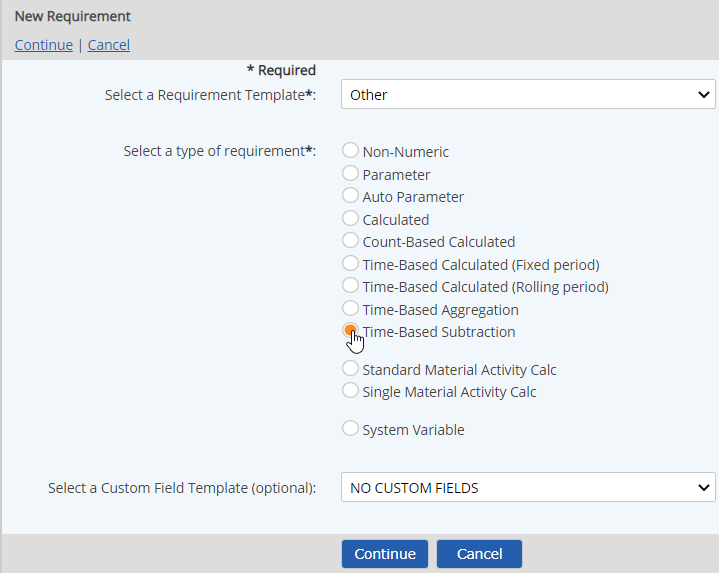
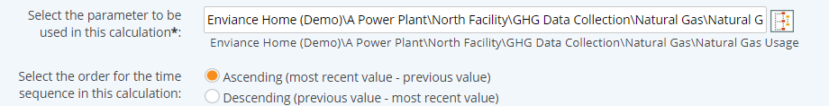

Select Time-Based Subtraction for the type.

To apply user-defined custom fields, select a Custom Field Template to apply. See Custom Field Templates.
Enter a Name.
You can add translated values for localization by clicking on the language symbol  .
.
In the Requirement Source section you can further define the requirement driver by selecting the Specific Citation and specifying a Periodicity. See Periodicity in Calculated Requirements.
Other optional fields include:
Active Date/Inactive Date:The begin and end dates that a requirement applies (optional)
Description: General description of requirement
UOM: Unit of measure
Precision: Number of places to the right of the decimal point to display
Required Percentage of Data Points for Calculation: Percentage of data points that must be present for the calculation to be made.
Calculation purpose: Describe what you want to accomplish in the formula.
In the Description section, choose the following settings:
Select the parameter to use in the calculation: Click the "select" button next to the box, then find and select the parameter.
Select the order for the time sequence in this calculation: Order may be Ascending (most recent value minus previous value) or Descending (previous value minus most recent value).

Other options include:
Expected Frequency: Can be used to produce a data warning if expected data is missing. The expected frequency is defined as the number of data points expected per day. A Begin Date must be set.
Limits: Regulatory and internal limits may be set in order to produce data warning when limits are exceeded. See Setting Regulatory Limits.